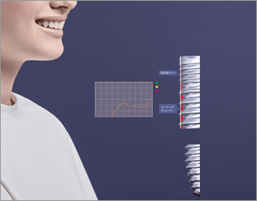

インプラントとは、体内に埋め込む医療機器や材料の総称で、心臓のペースメーカー、人工関節などいずれもインプラントです。歯が無くなった場合に、顎骨に埋め込む人工歯根もインプラントの一つです。歯科では、歯を失ったあごの骨（顎骨）に、チタンなどの体になじみやすい材両で製作された歯根を埋め込み、それを土台にセラミックや金属などで作った人工歯を取り付けたもので、一般には人工歯根、またはインプラントといいます。
隣の歯を削らなくてはならないブリッジ治療や、保険診療では入れ歯しか選択肢がない患者様もインプラントを行えばしっかり固いものでも噛むことが再びできるようになります。
- Home
- 診療案内
ドクターズ東京が選ばれる理由
卓越した技術力
我々のチームは専門機関や臨床研修をしっかり行ったエキスパートたちです。
ドクターズ東京の高度な医療教育体制のなかで、高い技術と知識、経験に研鑽を積んでいます。
医院間ネットワーク
大学病院にも籍を置くドクターを中核に、国内海外の提携先から歯科医療に関する
最新情報が行き交うドクターズ東京のネットワーク。
定期的に専門機関で研修することで情報を共有し、常に最新の知見と技術を修得する努力をしています。
最新の知識・豊富な経験
常に最新の医療情報を国内海外問わず論文や発表から収集し勉強に精練する我々のチームは、豊富な経験に基づき、知識を技術力に昇華しております。知識は使いこなせなければ意味がないという意義の下に温故知新、古い見解から最新の知見までを網羅し日々の臨床に生かしております。
EBM・NBM・VBMに基づいた医療
我々の医療は正確に実証されたエビデンス（医学的根拠）のある医療を行います。また患者様の希望、背景、ストーリーに基づき治療プランを構築いたします。患者様本人がお持ちになる価値観に寄り添い正しい医療選択へのサポーターとなります。
部門紹介
治療について
歯科インプラント治療

再生医療
機能障害や機能不全に陥った歯や歯周組織に対して、細胞を積極的に利用して、その機能の再生をはかるものとされています。中でも歯周組織再生療法は、歯周病が進行し、歯の根を覆っている歯槽骨という組織が溶けてしまった場合に行う再生療法です。歯自身は抜けたり溶けたりしてしまってもインプラントなどでまた復活することができますが、歯槽骨はそれができません。歯を支える要である歯槽骨は土台となる大切な部分のため、溶けてなくなってしまえばインプラントなどの治療も不可能となります。そのため、歯周組織再生療法は、インプラント治療をしていく上でも重要な治療となります。
レーザー治療
歯科におけるレーザー治療は多くの場合に応用できます。レーザー光線の照射によってさまざまな効果が得られます。歯科で使用するレーザーには数種類あり、機器によってレーザーの性質が異なるため、治療範囲が異なります。使用用途は外科手術（顎の骨や歯茎や粘膜を切る、または止血させる）、虫歯の治療、歯石の除去、歯周病や口内炎の治療、根管治療、メラニン色素沈着の除去、傷口の消毒、知覚過敏の治療、顎関節症の痛みの緩和などがあります。例えば外科手術では痛みや出血がほとんど抑えられるため、治療部位がしっかりと確認でき、正確な治療ができるので審美的治療には最適です。